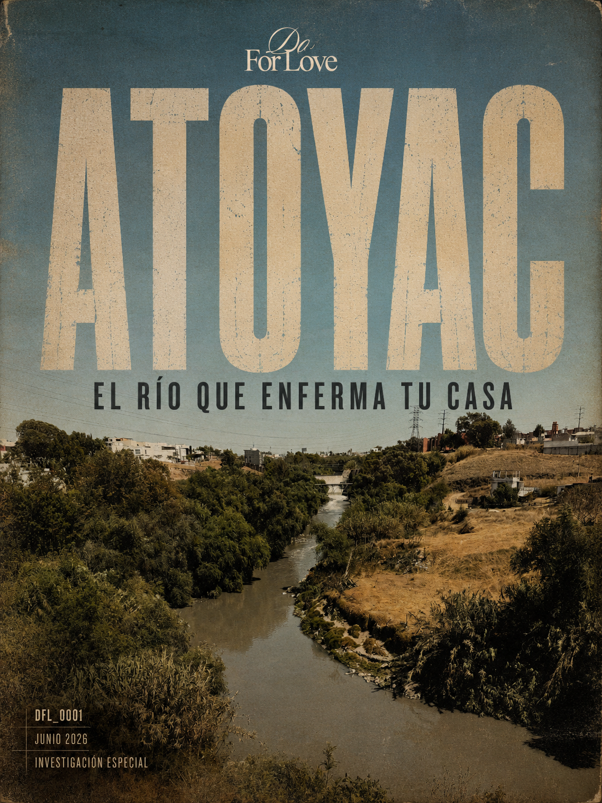

La primera edición editorial de Do For Love. Una reinterpretación narrativa de la investigación sobre el Río Atoyac, contada a través de imágenes, personajes, territorio y memoria.
ABRIR EDICIÓNEsta sección alojará la edición completa de la revista digital Do For Love Issue #001.
Aquí se integrarán artículos, galerías, material gráfico, personajes y contenido narrativo basado en la investigación ATOYAC.
```